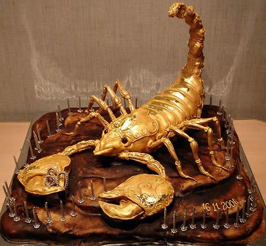

What's Next ?
Ulang Tahun adalah momen yang paling bahagia bagi sesorang ,di momen tersebut juga tidak semua orang bisa merasakan hal yang sama yaitu bahagia. tapi kebanyakan orang pasti merayakan ulang tahunnya semeriah mungkin meskipun umurnya sudah tidak muda mereka masih merayakan dan berbagi kebahagian dengan orang-orang disekitarnya. Dengan mendekorasi ruangan rumahnya agar tampak semeriah mungkin mereka memesan jasa dekorasi untuk ulang tahun
Artikel berdasarkan kategori

Kue kalajengking adalah termasuk kue terunik...
05 nov 2017views :109,398 klik disini